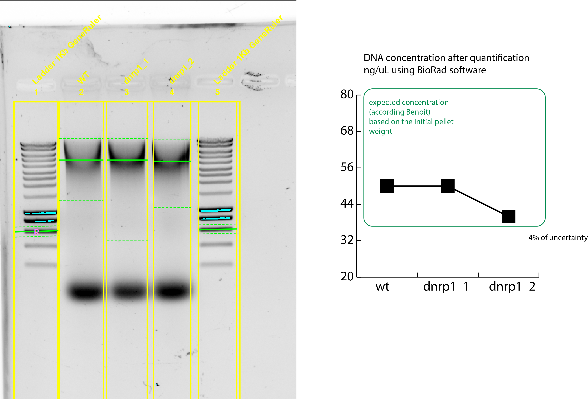

3. Title: More DNA extraction of dnrp1 and WT strains¶
3.1. Date¶
15102020
3.2. Objective¶
To have more SATAY DNA from WT and dnrp1 strains to further sequence .
3.3. Method¶
Genomic extraction according Benoit protocol. See HERE
Use 2x more pellet , and upscaled the whole protocol to have more DNA to play with.
Pellet weights:
WT:
dnrp1_1:
dnrp1_2:
The final volume of DNA was :
WT: ~ 550uL
dnrp1: ~750uL
dnrp1 : ~750ul
3.4. Results¶
 {width=50%}
{width=50%}
Using Biorad Image Lab software to quantify the bands from gel, taking the 600bp band as a reference.
The 600bp band has 60ng of DNA in the 1kB GeneRuler ladder.
{width=90%}
The concentrations achieved with this method were:
Strain |
Mean (ng/uL) |
std |
Significance of the std |
Final Volume |
Total DNA |
|---|---|---|---|---|---|
WT |
27.911019 |
1.084485 |
0.038855084 |
550 |
15ug |
dnrp1_1 |
40.583937 |
1.576893 |
0.038855102 |
750 |
30ug |
dnrp1_2 |
34.738095 |
1.349751 |
0.038855067 |
750 |
26ug |
3.5. Conclusion¶
I have enough DNA to continue for the digestion and ligation in order to send those samples for sequencing.